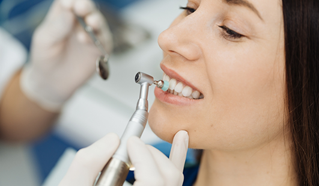
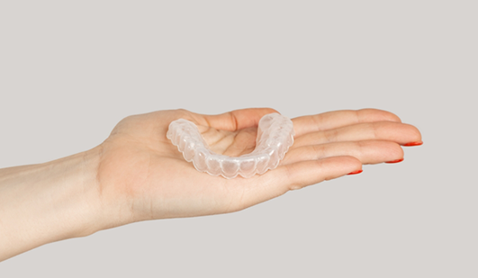

Preventive Dentistry Hays
A Healthy Smile Is a Happy Smile
It is always easier to prevent dental problems from developing than it is to treat them later. Our talented team at Lifetime Dental Care offers preventive dentistry to help keep your teeth and gums healthy. The goal of preventive care is to avert diseases like tooth decay, periodontal disease (gum disease), and other damaging oral health conditions before they cause permanent damage. We offer a number of preventive treatments to help you keep your smile in the best possible health. If you’re due for a checkup and cleaning, call our Hays dental office today to plan your next visit!
Why Choose Lifetime Dental Care for Preventive Dentistry?
- A Team of 3 Highly Experienced Dentists
- Comprehensive Dentistry – From Simple to Complex
- We Accept & Maximize Dental Insurance
Dental Checkups & Cleanings

We encourage all our patients to visit us at least once every six months. During these routine appointments, we will provide a thorough dental cleaning and exam to make sure that your smile is in good health. Depending on your individual dental needs, you may need to come to our office more often. If you notice any type of dental pain or damage or experience a dental emergency, we urge you to contact us as soon as possible to receive the high-quality dental care you need.
Oral Cancer Screenings
Oral cancer includes cancers of the lips, tongue, floor of the mouth, cheeks, throat (pharynx), sinuses, and hard and soft palate. While oral cancer can usually be successfully treated when detected early, most cases of oral cancer are not detected until they have progressed into a more serious, advanced stage that is much more difficult to treat.
At our office, we are dedicated to doing all we can to detect and treat oral cancers and other abnormalities at the earliest possible stage. During your routine dental cleanings and exams at our office, our dentists and team will perform an oral cancer screening with VELscope technology.
Signs & Symptoms of Oral Cancer
The following are common symptoms of oral cancer:
- A persistent sore throat or feeling that something is caught at the back of the throat
- Unexplained bleeding in the mouth
- A persistent or lasting sore on the face, neck or mouth that bleeds easily and does not heal within two weeks
- Unexplained loss of feeling, pain or numbness in the face, neck or mouth
- Ear pain
- Lumps, bumps or rough spots on the gums, lips or other parts of the mouth
- Red, white or speckled red-and-white patches in the mouth
- Difficulty chewing, speaking or swallowing
- A change in the way your teeth or dentures fit together
While our team will perform a screening for oral cancer to check for these and other symptoms, we encourage you to contact us if you notice any of these problems or if you experience any other type of dental pain. We are committed to helping you stay in good health.
Nightguards for Bruxism

If you’re experiencing chronic tension headaches, jaw pain, or jaw tenderness, it could be a sign that you’re grinding and clenching your teeth while you sleep. This condition, called bruxism, can lead to extensive dental damage, including TMJ disorder and broken and cracked teeth. To keep these negative impacts from harming your smile, we offer customized nightguards to cushion your jaw joints, facial muscles, and teeth from grinding.
General & Family Dentistry
General and family dentistry encompasses a number of dental treatments that are aimed at helping you achieve and maintain optimal oral health for a lifetime. Whether you are bringing your child in for a simple dental checkup or need a more complex restorative procedure, we are here to care for your family’s smiles. Our experienced dentists and team are pleased to provide comprehensive general and family dentistry to meet all of your dental needs and goals for a healthy, beautiful smile.
Learn More About Children’s Dentistry
At-Home Preventive Dental Care
There are several steps you can take to prevent cavities and tooth decay. Our dentists and team recommend that you follow these guidelines to help minimize your chances for developing cavities:
- Brush and floss your teeth every day. You should brush at least twice a day and floss at least once a day. Use a soft-bristled toothbrush and fluoridated toothpaste.
- Maintain a balanced, healthy diet with a limited amount of very sugary or acidic foods.
- Visit our office at least twice a year for a routine dental cleaning and exam.
- Ask our team about dental sealants and fluoride treatment to see if they are right for your smile.
To learn more about preventive care, we invite you to call or visit us today!